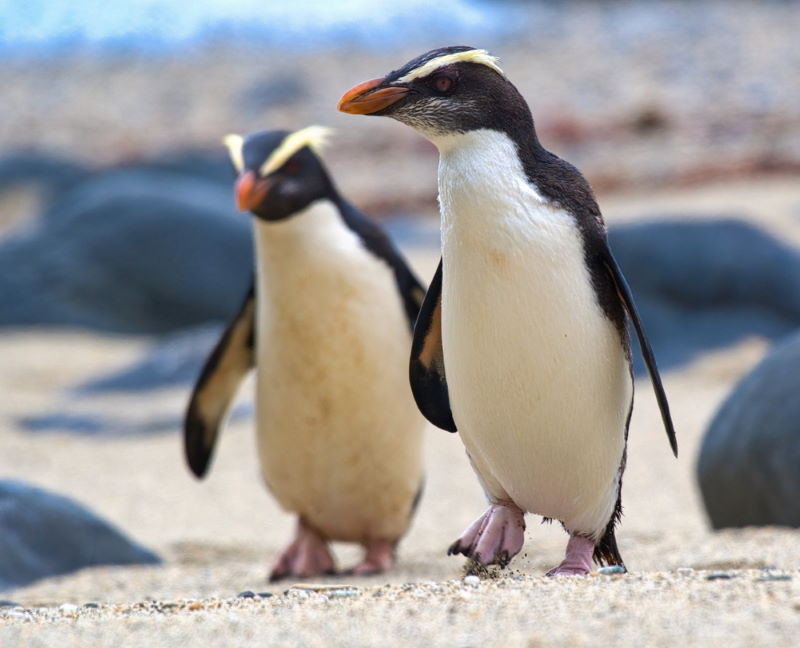

1. Koningspinguïn
De koningspinguïn is de op één na grootste pinguïnsoort ter wereld. Ze zijn 95 centimeter groot en relatief dun. De oranje vlekken op de mannetjes maken het makkelijk om de koningspinguïn te herkennen. Deze dieren leven op de eilanden rondom Antarctica en zijn altijd in grote kolonies te vinden. Hun leefgebied is net wat warmer dan op de zuidpool, waardoor ze minder extreme weersomstandigheden hoeven te overleven.
2. Keizerpinguïn
Dit is de grootste pinguïnsoort op aarde, met een gemiddelde lengte van 110 centimeter. De keizerspinguïn kan dan ook 22 tot 37 kilo wegen. In tegenstelling tot de koningspinguïn leven deze dieren net wat zuidelijker. Een ander verschil tussen deze twee pinguïnsoorten is de vorm van hun snavel. De snavel van de keizerspinguïn is namelijk net wat krommer. Ze bevinden zich op de rand van Antarctica, waar de temperaturen erg laag kunnen zijn.
3. Adeliepinguïn
Je herkent de adeliepinguïn meteen aan zijn uitzonderlijk lange staart en zijn kleine formaat. De pinguïns worden maximaal 61 centimeter lang en zijn helemaal zwart-wit. Hun ogen vallen meteen op, want er zit een witte ring rondom hun pupil. Hun kleine formaat maakt het makkelijker om glad ijs te trotseren. De adeliepinguïn staat er zelfs om bekend dat hij als een soort slee over het ijs glijdt.
4. Ezelspinguïn
De ezelspinguïn heeft zijn naam te danken aan het geluid dat hij maakt. Dit gekwetter lijkt namelijk op het gebalk van een ezel. Hij heeft een witte borst en is voor de rest zwart, met een oranje snavel en poten. De ezelspinguïn is een ster in het water, want hij kan wel 40 kilometer per uur zwemmen. Dat maakt hem meteen de snelst zwemmende pinguïn ter wereld.
5. Dwergpinguïn
De naam zegt het natuurlijk al: deze pinguïns zijn uitzonderlijk klein. Sterker nog, het is de kleinste pinguïnsoort. Ze worden maximaal 40 centimeter lang en wegen vaak niet meer dan een kilo. Hun buik is wit, terwijl de rest van hun lijf een donkerblauwe kleur heeft. Ze zijn bovendien helemaal aangepast op een leven in het water, met een gestroomlijnde vorm en ogen die goed onderwater kunnen zien. Je vindt deze pinguïns vooral rond Australië en Nieuw-Zeeland.
6. Witvleugepinguïn
Deze pinguïn dankt zijn naam aan een paar witte strepen op zijn vleugels. De dieren wonen op slechts twee verschillende eilanden die bij Nieuw-Zeeland horen. Ze vertonen apart gedrag dat bij geen enkele andere pinguïnsoort voorkomt. Overdag leven ze namelijk in een kolonie, maar ’s nachts gaan ze in hun eentje op pad. Ze keren weer terug zodra het begint te schemeren. Meestal trekken ze richting de kustlijn, terwijl ze zich overdag veiliger voelen in het binnenland.
7. Magelhaenpinguïn
Het is Ferdinand Magellaan waar deze pinguïn zijn naam aan te danken heeft. De Portugese ontdekkingsreiziger probeerde een reis om de wereld te maken en kwam ook door het leefgebied van de magelhaenpinguïn. Deze dieren wonen namelijk in het zuiden van Zuid-Amerika, waar ze meer dan zestig verschillende leefgebieden hebben. Ze jagen vooral op ansjovis en schaaldieren en kunnen tot wel 100 meter diep duiken om hun prooi te vangen.
8. Humboldtpinguïn
Ook deze pinguïns zijn vernoemd naar een ontdekkingsreiziger, namelijk Alexander von Humboldt. Je herkent de humboldtpinguïn vooral aan de zwarte streep op zijn borst en de witte streep op zijn wenkbrauw. Ze leven vooral in het westen van Zuid-Amerika, waar ze in ondiepe wateren op hun prooien jagen. Door de jaren heen zijn er helaas steeds minder humboldtpinguïns in het wild te vinden. Ze worden bedreigd door mensen die hun leefgebied inpikken, maar ook door een stijgend aantal ratten in hun leefgebied.
9. Galapagospinguïn
De galapagospinguïn is maar op één plek ter wereld te vinden en dat is meteen de plek waar hij zijn naam aan te danken heeft: de Galapagoseilanden. Hij heeft dus een klein leefgebied en wordt ook met uitsterven bedreigd. Dat komt vooral door de dalende hoeveelheid vis in het water rondom hun leefgebied. De galapagospinguïn is relatief klein, met een gemiddelde lengte van 53 centimeter. Ze hebben een smalle witte band op hun kop en een zwarte band op hun borst.
10. Zwartvoetpinguïn
Het spreekt voor zich wat voor kleur de poten van deze pinguïn hebben. De pinguïn is helemaal zwart-wit en heeft een hoefijzervormige band over zijn borst lopen. Het leefgebied van de zwartvoetpinguïn is bijzonder, want dit zijn de enige pinguïns die in Afrika broeden. Je vindt ze alleen in het zuiden van Afrika, bij landen zoals Namibië en Zuid-Afrika.
11. Geeloogpinguïn
In vergelijking met andere pinguïnsoorten heeft de geeloogpinguïn een wel heel opvallend uiterlijk. Zijn ogen hebben een bijzondere gele kleur en er loopt een gele band van de snavel naar de ogen, tot aan de achterkant van zijn kop. De pinguïns zijn alleen maar op Nieuw-Zeeland te vinden, waar ze de bijnaam Hoiho hebben gekregen. Dat betekent “luidruchtige”, wat natuurlijk alles te maken heeft met het geluid dat deze pinguïns maken.
12. Fjordlandkuifpinguïn
Ook deze pinguïnsoort valt op met zijn uiterlijk. Zo heeft de fjordlandkuifpinguïn een gele wenkbrauwstreep die overgaat op een paar gele veren. Hij heeft nog een paar witte streepjes op zijn wangen om zijn look compleet te maken. De fjordlandkuifpinguïn is vernoemd naar het gebied waar hij vooral te vinden is: langs de kust van het Nieuw-Zeelandse Fjordland. Daarnaast zijn ze ook in Tasmanië te vinden. Ze houden vooral van rotsachtige gebieden en dichtbegroeide loofbossen.
13. Snareskuifpinguïn
Op de Snareseilanden van Nieuw-Zeeland leeft deze pinguïnsoort. Hij heeft een broedgebied van 3 vierkante kilometer, waardoor hij met uitsterven wordt bedreigd. De snareskuifpinguïn is middelgroot en lijkt heel veel op de fjordlandkuifpinguïn. Ze hebben allebei een dikke snavel en lichtgekleurde veren die uit hun kop steken. De kleuren van de snareskuifpinguïn zijn wat rustiger en hij heeft geen witte strepen op zijn kop.
14. Grote kuifpinguïn
Nog een pinguïnsoort uit Nieuw-Zeeland, deze keer uit gebieden zoals de Bounty-eilanden en de Antipodeneilanden. De grote kuifpinguïn heeft een dikke snavel met een felle oranje kleur. Ook deze pinguïnsoort valt op met een kleurrijke kuif. Het is niet helemaal duidelijk waar de pinguïns precies van leven, maar onderzoekers denken dat ze voornamelijk op krill jagen. Helaas is ook deze pinguïnsoort niet zeker van zijn toekomst, met steeds dalende aantallen.
15. Zuidelijke rotspinguïn
Deze pinguïnsoort wordt ook wel de rotsspringer genoemd. Dat heeft alles te maken met hun leefgebied, want ze verblijven het liefst in rotsachtige gebieden. De zuidelijke rotspinguïn heeft een opvallende kuif, met een combinatie van lange witte en zwarte veren op zijn kop. De oranje snavel en roze poten zorgen ervoor dat de kleurrijke pinguïn meteen opvalt.
16. Oostelijke rotspinguïn
Deze pinguïnsoort is familie van de zuidelijke rotspinguïn en lijkt dus ook veel op zijn familielid. Ze zijn wel uitzonderlijk klein, met een gemiddelde lengte van 45 tot 55 centimeter. Vaak wegen ze dan ook tussen de twee en vier kilo. Deze pinguïnsoort werd pas relatief laat ontdekt, aangezien er pas in 2006 werd aangetoond dat er verschillen zijn met de zuidelijke rotspinguïn. Sommige wetenschappers vinden het verschil nog niet groot genoeg, omdat het vooral in de genen zichtbaar is. Daarom erkent niet iedereen deze aparte pinguïnsoort.
17. Noordelijke rotspinguïn
Dit is het derde lid uit de familie rotspinguïns. Hij heeft een opvallende gele kuif, heeft een witte borst en heeft verder een donkerblauwe kleur. Het is vooral de kleur en de dikte van de kuif die hem onderscheidt van de zuidelijke rotspinguïn. Deze is namelijk een stuk dikker en heeft een fellere kleur. Het overgrote deel van deze soort is op eilanden in de Atlantische Oceaan te vinden, terwijl 20% in Indische Oceaan leeft.
18. Macaronipinguïn
 De macaronipinguïn heeft een uiterlijk dat meteen opvalt. Hij heeft een kuif met oranje veren die al bij zijn wenkbrauw begint. Het grootste deel van deze pinguïnsoort is op de Crozeteilanden te vinden, net rond Antarctica. Ze staan bekend om hun agressieve karakter en ze maken ontzettend veel herrie.
De macaronipinguïn heeft een uiterlijk dat meteen opvalt. Hij heeft een kuif met oranje veren die al bij zijn wenkbrauw begint. Het grootste deel van deze pinguïnsoort is op de Crozeteilanden te vinden, net rond Antarctica. Ze staan bekend om hun agressieve karakter en ze maken ontzettend veel herrie.
Dat waren alle 18 soorten pinguïns, de bron staat hier.